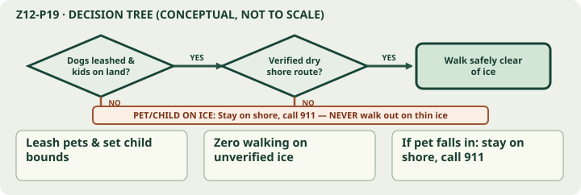

Z12-P19 · Extreme environments · Adapted historical material
Keep children, pets and unequipped walking parties strictly on shore
Prevent the tragic chain reaction where a loose pet or wandering child triggers an impulsive multi-victim ice breakthrough.
When it applies · Families, dog walkers and unequipped hikers near frozen ponds, retention basins, creeks and lakes.
Equipment · Short sturdy leash for dogs, clear visual boundary rules for children and dry land detour routes.

Actions
- Keep dogs leashed securely whenever walking near frozen ponds, storm retention basins, creeks or lakes—chasing waterfowl or running onto thin ice is a leading trigger of fatal owner breakthroughs.[E12, X18, ED]
- Establish bright visible land boundaries for children well back from ice edges, snow-covered docks and steep slippery banks, maintaining direct adult supervision.[E12, E11, ED]
- If a pet breaks through ice, NEVER walk or crawl out onto weak ice after it—call local emergency/fire dispatch, call the dog calmly from solid shore and protect human lives first.[X18, E12, T01]
Failure recognition · Letting a dog run off-leash beside a partially frozen creek, then sprinting onto thin shelf ice when the dog plunges through.[E12, X18, T01]
Verify · Confirm dogs stay leashed, children stay well back on firm land and every walking route avoids frozen water shortcuts.[E12, E11, ED]
Stop or change course · Any unverified shoreline ice edge, melted bank moat or open water pocket demands turning back onto solid land immediately.[E12, X01]
Evidence and editorial notes
- E11 · NPS · Hike Smart (current web edition)
- Section: Plan your hike; Stay together · Conditions: Groups on hiking routes
Support: Choose a route suited to the group's abilities and hike at a pace that keeps the group together.
Limitations: Fast hikers moving ahead at junctions is a leading driver of preventable separation. · Conflicting evidence: None; aligns with SAR prevention principles.
Editorial note: Core reference for group accountability and pacing cards. · Specialist reviewer: Group leaders and search and rescue
Primary source · checked 2026-11-24 - E12 · Minnesota DNR · Ice Safety (current web edition)
- Section: Ice Safety > basic precautions · Conditions: Minnesota ice edges and travel routes
Support: No ice is universally safe. Strength can differ over short distances; appearance or tracks alone cannot establish a safe crossing.
Limitations: Currents, springs, snow insulation, and freeze-thaw cycles weaken ice invisibly. · Conflicting evidence: None; mandates shore-bound detour for foundational walking parties.
Editorial note: Maintains strict separation from specialized B013 ice chapters. · Specialist reviewer: Ice safety and search and rescue
Primary source · checked 2026-11-24 - T01 · American Red Cross · First Aid Steps (current web edition)
- Section: First Aid Steps > Check the scene; check the person · Conditions: Lay responder in United States; assess safety before contact
Support: Check scene safety, responsiveness, breathing and immediately life-threatening conditions.
Limitations: Lay guidance does not replace advanced clinical or rescue protocols. · Conflicting evidence: None; universal first-response opening gate.
Editorial note: Anchors scene-safety-first rule across Z01. · Specialist reviewer: EMS and wilderness medicine
Primary source · checked 2026-11-24 - X01 · Minnesota DNR · General Ice Thickness Guidelines (current web edition)
- Section: General Ice Thickness Guidelines > New Clear Ice Only · Conditions: Minnesota lakes and ponds during stable winter freezing
Support: Agency thickness guidelines apply ONLY to new, clear solid ice and are NEVER a guarantee of safety; white snow-ice is roughly half as strong, and currents, springs, inlets, outlets and snow cover create hidden thin zones.
Limitations: No ice is 100% safe; one drilled thickness check does not clear an entire crossing route. · Conflicting evidence: Directly reconciles B013 P01–P05, P11 and P17 with MN DNR warnings.
Editorial note: Enforces non-guarantee ice boundaries across Z12. · Specialist reviewer: Ice safety and winter search and rescue
Primary source · checked 2026-11-24 - X18 · Minnesota DNR · Ice Safety (current web edition)
- Section: Ice Safety > Self-Rescue and Witness Reach-Throw-Don't-Go · Conditions: Cold-water ice breakthrough on frozen lakes or rivers
Support: If you fall through ice, control breathing, turn back toward the direction you came from (known thicker ice), kick horizontally onto the shelf using ice picks if carried, roll away without standing immediately; witnesses MUST stay off weak ice, call 911 and use reach/throw aids rather than walking out.
Limitations: Ice rescue carries extreme drowning risk for untrained rescuers; dry practice and qualified rescue review are mandatory. · Conflicting evidence: Directly aligns with B013 P06–P08 and P14; carries high-consequence specialist review hold.
Editorial note: Anchored in Z12 ice-breakthrough cards and logged in the Astra escalation register. · Specialist reviewer: Ice rescue, EMS and wilderness medicine
Primary source · checked 2026-11-24
Source lineage · B013-P04/P12 and MN DNR ice safety; adapted historical material · Classification · Adapted historical material.